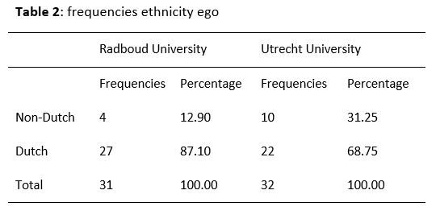
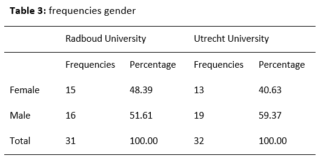

Descriptives

Radboud
University
Period 2016-2017

## Min. 1st Qu. Median Mean 3rd Qu. Max.
## 0.0000 0.0000 0.0000 0.9375 1.2500 7.0000
On average, in period 2016-2017, ego’s had 0.94 ties with other staff
members within the Sociology department of Radboud University (see
degrees, table 1). The minimum number of degrees is zero, the maximum
number is 7.
Period 2018-2019

## Min. 1st Qu. Median Mean 3rd Qu. Max.
## 0.000 0.000 0.000 1.062 1.250 6.000
On average, in period 2018-2019, ego’s had 1.06 ties with other
staff members within the Sociology department of Radboud University (see
degrees, table 1). The minimum number of degrees is 0, the maximum
number is 6.
Period 2020-2022

## Min. 1st Qu. Median Mean 3rd Qu. Max.
## 0.00 0.00 1.50 1.75 3.00 6.00
On average, in period 2020-2022, ego’s had 1.75 ties with other
staff members within the Sociology department of Radboud University (see
degrees, table 1). The minimum number of degrees is 0, the maximum
number is 6.
Utrecht
University
Period 2016-2017
## [1] "C:/Users/ninab/OneDrive/Documenten/GitHub/labjournal"

## Min. 1st Qu. Median Mean 3rd Qu. Max.
## 0.000 0.000 1.000 1.758 2.000 20.000
On average, in period 2016-2017, ego’s had 1.76 ties with other
staff members within the Sociology department of Utrecht University (see
degrees, table 1). The minimum number of degrees is 0, the maximum
number is 20.
Period 2018-2019

## Min. 1st Qu. Median Mean 3rd Qu. Max.
## 0 0 1 2 2 23
On average, in period 2018-2019, ego’s had 2.00 ties with other
staff members within the Sociology department of Utrecht University (see
degrees, table 1). The minimum number of degrees is 0, the maximum
23.
Period 2020-2022

## Min. 1st Qu. Median Mean 3rd Qu. Max.
## 0.00 1.00 2.00 2.97 3.00 30.00
On average, in period 2020-2022, ego’s had 2.97 ties with other
staff members within the Sociology department of Utrecht University (see
degrees, table 1). The minimum number of degrees is 0, the maximum
number is 30.
Conclusion
Generally, staff members of Utrecht University have more
collaboration ties within the department than staff members of Radboud
University.
Ethnicity egos
Within the Sociology department of the Radboud University, 15.63
percent of the staff members has a non-Dutch last name. Within the
Sociology department of Utrecht University, this percentage is 30.30.
The department of Utrecht University is more ethnically diverse than the
department of Radboud University.

Gender egos
Within the Sociology department of the Radboud University, 50 percent
of the staff members is female and 50 percent is male. Within the
Sociology department of Utrecht University, 39.40 percent of the staff
members is female and 60.61 percent is male. This means that regarding
to gender, the department of Radboud University is more diverse than the
department of Utrecht University.

Ethnic diversity
egonet
On average, the egonets of staff members from Radboud University had
an ethnic diversity of 23.61 percent. This is lower than the ethnic
diversity of the egonets from Utrecht University, that scored 35.99
percent on average. Therefore, we can conclude that sociologist from
Utrecht University generally have a more ethnically diverse
collaboration network than sociologists from Radboud University.
## [1] "C:/Users/ninab/OneDrive/Documenten/GitHub/labjournal"

## [1] "C:/Users/ninab/OneDrive/Documenten/GitHub/labjournal"
Year first
publication
On average, sociologists from Radboud University published their
first paper in 2007 (see table 1). Generally, sociologists from Utrecht
University published their first paper in 2005.
## [1] "C:/Users/ninab/OneDrive/Documenten/GitHub/labjournal"
## [1] "C:/Users/ninab/OneDrive/Documenten/GitHub/labjournal"

Densities
Density contains all observed relations divided by all possible
relations. For Radboud University, the density of net 1 contains
0.030, the density of net 2 0.034 and the density of net 3 0.056. For
Utrecht University, the denisty of net 1 is 0.055, of net 2 0.063 and of
net 3 0.093. For both universities, the density of the collaboration
networks within the sociology departments has increased. Generally, the
network within the sociology department of Utrecht University is more
dense than the network within the sociology department of Radboud
University.
Intra-/intergroup
density: ethnicity
To study segregation within the networks by ethnicity of the staff
members, the intragroup and intergroup densities are compared. For
both Radboud and Utrecht University, people with the same ethnicity
(Dutch or non-Dutch) seem to be working together more often. Segregation
in collaboration ties for gender is only present for Utrecht
University.

IyBEZXNjcmlwdGl2ZXMNCiZuYnNwOw0KIVtdKGltYWdlcy90YWJlbDEucG5nKQ0KJm5ic3A7DQoNCiMjIFJhZGJvdWQgVW5pdmVyc2l0eQ0KJm5ic3A7DQoNCioqUGVyaW9kIDIwMTYtMjAxNyoqDQoNCmBgYHtyLCBlY2hvPUZBTFNFfQ0KbG9hZCgiLi9kYXRhL2Rlc2NyaXB0aXZlcy9SVV9uZXRfYXJyYXlfc3ltLlJEYXRhIikNCmxvYWQoIi4vZGF0YS9kZXNjcmlwdGl2ZXMvUlVfZGZ2Mi5SRGF0YSIpDQoNCm5ldDEgPC0gbmV0X3NvY19hcnJheVsgLCwgMV0NCmRpYWcobmV0MSkgPC0gMA0KDQpuZXQxX2cgPC0gaWdyYXBoOjpncmFwaF9mcm9tX2FkamFjZW5jeV9tYXRyaXgobmV0MSwgbW9kZSA9IGMoInVuZGlyZWN0ZWQiKSkNCnBsb3QobmV0MV9nKQ0KDQpkZWdyZWUgPC0gcm93U3VtcyhuZXQxKQ0Kc3VtbWFyeShkZWdyZWUpDQoNCmBgYA0KDQombmJzcDsNCg0KDQpPbiBhdmVyYWdlLCBpbiBwZXJpb2QgMjAxNi0yMDE3LCBlZ2/igJlzIGhhZCAwLjk0IHRpZXMgd2l0aCBvdGhlciBzdGFmZiBtZW1iZXJzIHdpdGhpbiB0aGUgU29jaW9sb2d5IGRlcGFydG1lbnQgb2YgUmFkYm91ZCBVbml2ZXJzaXR5IChzZWUgZGVncmVlcywgdGFibGUgMSkuIFRoZSBtaW5pbXVtIG51bWJlciBvZiBkZWdyZWVzIGlzIHplcm8sIHRoZSBtYXhpbXVtIG51bWJlciBpcyA3Lg0KDQoNCioqUGVyaW9kIDIwMTgtMjAxOSoqDQoNCmBgYHtyLCBlY2hvPUZBTFNFfQ0KbmV0MiA8LSBuZXRfc29jX2FycmF5WyAsLCAyXQ0KZGlhZyhuZXQyKSA8LSAwDQoNCm5ldDJfZyA8LSBpZ3JhcGg6OmdyYXBoX2Zyb21fYWRqYWNlbmN5X21hdHJpeChuZXQyLCBtb2RlID0gYygidW5kaXJlY3RlZCIpKQ0KcGxvdChuZXQyX2cpDQoNCmRlZ3JlZSA8LSByb3dTdW1zKG5ldDIpDQpzdW1tYXJ5KGRlZ3JlZSkNCg0KYGBgDQombmJzcDsNCk9uIGF2ZXJhZ2UsIGluIHBlcmlvZCAyMDE4LTIwMTksIGVnb+KAmXMgaGFkIDEuMDYgdGllcyB3aXRoIG90aGVyIHN0YWZmIG1lbWJlcnMgd2l0aGluIHRoZSBTb2Npb2xvZ3kgZGVwYXJ0bWVudCBvZiBSYWRib3VkIFVuaXZlcnNpdHkgKHNlZSBkZWdyZWVzLCB0YWJsZSAxKS4gVGhlIG1pbmltdW0gbnVtYmVyIG9mIGRlZ3JlZXMgaXMgMCwgdGhlIG1heGltdW0gbnVtYmVyIGlzIDYuDQoNCiZuYnNwOw0KDQoqKlBlcmlvZCAyMDIwLTIwMjIqKg0KDQombmJzcDsNCg0KYGBge3IsIGVjaG89RkFMU0V9DQpuZXQzIDwtIG5ldF9zb2NfYXJyYXlbICwsIDNdDQpkaWFnKG5ldDMpIDwtIDANCg0KbmV0M19nIDwtIGlncmFwaDo6Z3JhcGhfZnJvbV9hZGphY2VuY3lfbWF0cml4KG5ldDMsIG1vZGUgPSBjKCJ1bmRpcmVjdGVkIikpDQpwbG90KG5ldDNfZykNCg0KZGVncmVlIDwtIHJvd1N1bXMobmV0MykNCnN1bW1hcnkoZGVncmVlKQ0KDQpgYGANCg0KJm5ic3A7DQpPbiBhdmVyYWdlLCBpbiBwZXJpb2QgMjAyMC0yMDIyLCBlZ2/igJlzIGhhZCAxLjc1IHRpZXMgd2l0aCBvdGhlciBzdGFmZiBtZW1iZXJzIHdpdGhpbiB0aGUgU29jaW9sb2d5IGRlcGFydG1lbnQgb2YgUmFkYm91ZCBVbml2ZXJzaXR5IChzZWUgZGVncmVlcywgdGFibGUgMSkuIFRoZSBtaW5pbXVtIG51bWJlciBvZiBkZWdyZWVzIGlzIDAsIHRoZSBtYXhpbXVtIG51bWJlciBpcyA2Lg0KDQombmJzcDsNCg0KJm5ic3A7DQoNCiMjIFV0cmVjaHQgVW5pdmVyc2l0eQ0KDQoqKlBlcmlvZCAyMDE2LTIwMTcqKg0KDQpgYGB7ciwgZWNobz1GQUxTRX0NCiNzdGFydCB3aXRoIGNsZWFuIHdvcmtzcGFjZSANCnJtKGxpc3Q9bHMoKSkNCmdldHdkKCkNCg0KbG9hZCgiLi9kYXRhL2Rlc2NyaXB0aXZlcy9VVV9uZXRfYXJyYXlfc3ltLlJEYXRhIikNCmxvYWQoIi4vZGF0YS9kZXNjcmlwdGl2ZXMvVVVfZGZ2Mi5SRGF0YSIpDQoNCm5ldDEgPC0gbmV0X3NvY19hcnJheVsgLCwgMV0NCmRpYWcobmV0MSkgPC0gMA0KDQpuZXQxX2cgPC0gaWdyYXBoOjpncmFwaF9mcm9tX2FkamFjZW5jeV9tYXRyaXgobmV0MSwgbW9kZSA9IGMoInVuZGlyZWN0ZWQiKSkNCnBsb3QobmV0MV9nKQ0KDQpkZWdyZWUgPC0gcm93U3VtcyhuZXQxKQ0Kc3VtbWFyeShkZWdyZWUpDQoNCmBgYA0KDQombmJzcDsNCk9uIGF2ZXJhZ2UsIGluIHBlcmlvZCAyMDE2LTIwMTcsIGVnb+KAmXMgaGFkIDEuNzYgdGllcyB3aXRoIG90aGVyIHN0YWZmIG1lbWJlcnMgd2l0aGluIHRoZSBTb2Npb2xvZ3kgZGVwYXJ0bWVudCBvZiBVdHJlY2h0IFVuaXZlcnNpdHkgKHNlZSBkZWdyZWVzLCB0YWJsZSAxKS4gVGhlIG1pbmltdW0gbnVtYmVyIG9mIGRlZ3JlZXMgaXMgMCwgdGhlIG1heGltdW0gbnVtYmVyIGlzIDIwLg0KDQombmJzcDsNCg0KKipQZXJpb2QgMjAxOC0yMDE5KioNCg0KYGBge3IsIGVjaG89RkFMU0V9DQpuZXQyIDwtIG5ldF9zb2NfYXJyYXlbICwsIDJdDQpkaWFnKG5ldDIpIDwtIDANCg0KbmV0Ml9nIDwtIGlncmFwaDo6Z3JhcGhfZnJvbV9hZGphY2VuY3lfbWF0cml4KG5ldDIsIG1vZGUgPSBjKCJ1bmRpcmVjdGVkIikpDQpwbG90KG5ldDJfZykNCg0KZGVncmVlIDwtIHJvd1N1bXMobmV0MikNCnN1bW1hcnkoZGVncmVlKQ0KDQpgYGANCg0KJm5ic3A7DQpPbiBhdmVyYWdlLCBpbiBwZXJpb2QgMjAxOC0yMDE5LCBlZ2/igJlzIGhhZCAyLjAwIHRpZXMgd2l0aCBvdGhlciBzdGFmZiBtZW1iZXJzIHdpdGhpbiB0aGUgU29jaW9sb2d5IGRlcGFydG1lbnQgb2YgVXRyZWNodCBVbml2ZXJzaXR5IChzZWUgZGVncmVlcywgdGFibGUgMSkuIFRoZSBtaW5pbXVtIG51bWJlciBvZiBkZWdyZWVzIGlzIDAsIHRoZSBtYXhpbXVtIDIzLg0KDQombmJzcDsNCg0KKipQZXJpb2QgMjAyMC0yMDIyKioNCg0KJm5ic3A7DQpgYGB7ciwgZWNobz1GQUxTRX0NCm5ldDMgPC0gbmV0X3NvY19hcnJheVsgLCwgM10NCmRpYWcobmV0MykgPC0gMA0KDQpuZXQzX2cgPC0gaWdyYXBoOjpncmFwaF9mcm9tX2FkamFjZW5jeV9tYXRyaXgobmV0MywgbW9kZSA9IGMoInVuZGlyZWN0ZWQiKSkNCnBsb3QobmV0M19nKQ0KDQpkZWdyZWUgPC0gcm93U3VtcyhuZXQzKQ0Kc3VtbWFyeShkZWdyZWUpDQoNCmBgYA0KJm5ic3A7DQpPbiBhdmVyYWdlLCBpbiBwZXJpb2QgMjAyMC0yMDIyLCBlZ2/igJlzIGhhZCAyLjk3IHRpZXMgd2l0aCBvdGhlciBzdGFmZiBtZW1iZXJzIHdpdGhpbiB0aGUgU29jaW9sb2d5IGRlcGFydG1lbnQgb2YgVXRyZWNodCBVbml2ZXJzaXR5IChzZWUgZGVncmVlcywgdGFibGUgMSkuIFRoZSBtaW5pbXVtIG51bWJlciBvZiBkZWdyZWVzIGlzIDAsIHRoZSBtYXhpbXVtIG51bWJlciBpcyAzMC4NCg0KJm5ic3A7DQoNCiMjIENvbmNsdXNpb24NCg0KR2VuZXJhbGx5LCBzdGFmZiBtZW1iZXJzIG9mIFV0cmVjaHQgVW5pdmVyc2l0eSBoYXZlIG1vcmUgY29sbGFib3JhdGlvbiB0aWVzIHdpdGhpbiB0aGUgZGVwYXJ0bWVudCB0aGFuIHN0YWZmIG1lbWJlcnMgb2YgUmFkYm91ZCBVbml2ZXJzaXR5Lg0KDQombmJzcDsNCiZuYnNwOw0KDQojIyBFdGhuaWNpdHkgZWdvcw0KV2l0aGluIHRoZSBTb2Npb2xvZ3kgZGVwYXJ0bWVudCBvZiB0aGUgUmFkYm91ZCBVbml2ZXJzaXR5LCAxNS42MyBwZXJjZW50IG9mIHRoZSBzdGFmZiBtZW1iZXJzIGhhcyBhIG5vbi1EdXRjaCBsYXN0IG5hbWUuIFdpdGhpbiB0aGUgU29jaW9sb2d5IGRlcGFydG1lbnQgb2YgVXRyZWNodCBVbml2ZXJzaXR5LCB0aGlzIHBlcmNlbnRhZ2UgaXMgMzAuMzAuIFRoZSBkZXBhcnRtZW50IG9mIFV0cmVjaHQgVW5pdmVyc2l0eSBpcyBtb3JlIGV0aG5pY2FsbHkgZGl2ZXJzZSB0aGFuIHRoZSBkZXBhcnRtZW50IG9mIFJhZGJvdWQgVW5pdmVyc2l0eS4NCg0KJm5ic3A7DQoNCiFbXShpbWFnZXMvdGFiZWwyLnBuZykNCg0KJm5ic3A7DQoNCiMjIEdlbmRlciBlZ29zDQoNCldpdGhpbiB0aGUgU29jaW9sb2d5IGRlcGFydG1lbnQgb2YgdGhlIFJhZGJvdWQgVW5pdmVyc2l0eSwgNTAgcGVyY2VudCBvZiB0aGUgc3RhZmYgbWVtYmVycyBpcyBmZW1hbGUgYW5kIDUwIHBlcmNlbnQgaXMgbWFsZS4gV2l0aGluIHRoZSBTb2Npb2xvZ3kgZGVwYXJ0bWVudCBvZiBVdHJlY2h0IFVuaXZlcnNpdHksIDM5LjQwIHBlcmNlbnQgb2YgdGhlIHN0YWZmIG1lbWJlcnMgaXMgZmVtYWxlIGFuZCA2MC42MSBwZXJjZW50IGlzIG1hbGUuIFRoaXMgbWVhbnMgdGhhdCByZWdhcmRpbmcgdG8gZ2VuZGVyLCB0aGUgZGVwYXJ0bWVudCBvZiBSYWRib3VkIFVuaXZlcnNpdHkgaXMgbW9yZSBkaXZlcnNlIHRoYW4gdGhlIGRlcGFydG1lbnQgb2YgVXRyZWNodCBVbml2ZXJzaXR5Lg0KDQohW10oaW1hZ2VzL3RhYmVsMy5wbmcpDQoNCg0KIyMgRXRobmljIGRpdmVyc2l0eSBlZ29uZXQNCg0KT24gYXZlcmFnZSwgdGhlIGVnb25ldHMgb2Ygc3RhZmYgbWVtYmVycyBmcm9tIFJhZGJvdWQgVW5pdmVyc2l0eSBoYWQgYW4gZXRobmljIGRpdmVyc2l0eSBvZiAyMy42MSBwZXJjZW50LiBUaGlzIGlzIGxvd2VyIHRoYW4gdGhlIGV0aG5pYyBkaXZlcnNpdHkgb2YgdGhlIGVnb25ldHMgZnJvbSBVdHJlY2h0IFVuaXZlcnNpdHksIHRoYXQgc2NvcmVkIDM1Ljk5IHBlcmNlbnQgb24gYXZlcmFnZS4gVGhlcmVmb3JlLCB3ZSBjYW4gY29uY2x1ZGUgdGhhdCBzb2Npb2xvZ2lzdCBmcm9tIFV0cmVjaHQgVW5pdmVyc2l0eSBnZW5lcmFsbHkgaGF2ZSBhIG1vcmUgZXRobmljYWxseSBkaXZlcnNlIGNvbGxhYm9yYXRpb24gbmV0d29yayB0aGFuIHNvY2lvbG9naXN0cyBmcm9tIFJhZGJvdWQgVW5pdmVyc2l0eS4NCg0KJm5ic3A7DQpgYGB7ciwgZWNobz1GQUxTRX0NCiNzdGFydCB3aXRoIGNsZWFuIHdvcmtzcGFjZSANCnJtKGxpc3Q9bHMoKSkNCmdldHdkKCkNCg0KbG9hZCgiLi9kYXRhL2Rlc2NyaXB0aXZlcy9SVV9uZXRfYXJyYXlfc3ltLlJEYXRhIikNCmxvYWQoIi4vZGF0YS9kZXNjcmlwdGl2ZXMvUlVfZGZ2Mi5SRGF0YSIpDQpoaXN0KHNvY19kZiRkaXYubmV0LCBjb2w9ImxpZ2h0Ymx1ZSIsIG1haW49J1JVOiBldGhuaWMgZGl2ZXJzaXR5IGVnb25ldHMnLCB4bGFiPSdQZXJjZW50YWdlIG5vbi1EdXRjaCBjb2xsYWJvcmF0b3JzJykNCmBgYA0KJm5ic3A7DQpgYGB7ciwgZWNobz1GQUxTRX0NCiNzdGFydCB3aXRoIGNsZWFuIHdvcmtzcGFjZSANCnJtKGxpc3Q9bHMoKSkNCmdldHdkKCkNCg0KbG9hZCgiLi9kYXRhL2Rlc2NyaXB0aXZlcy9VVV9uZXRfYXJyYXlfc3ltLlJEYXRhIikNCmxvYWQoIi4vZGF0YS9kZXNjcmlwdGl2ZXMvVVVfZGZ2Mi5SRGF0YSIpDQpoaXN0KHNvY19kZiRkaXYubmV0LCBjb2w9ImxpZ2h0Ymx1ZSIsIG1haW49J1VVOiBldGhuaWMgZGl2ZXJzaXR5IGVnb25ldHMnLCB4bGFiPSdQZXJjZW50YWdlIG5vbi1EdXRjaCBjb2xsYWJvcmF0b3JzJykNCmBgYA0KJm5ic3A7DQoNCiMjIFllYXIgZmlyc3QgcHVibGljYXRpb24NCk9uIGF2ZXJhZ2UsIHNvY2lvbG9naXN0cyBmcm9tIFJhZGJvdWQgVW5pdmVyc2l0eSBwdWJsaXNoZWQgdGhlaXIgZmlyc3QgcGFwZXIgaW4gMjAwNyAoc2VlIHRhYmxlIDEpLiBHZW5lcmFsbHksIHNvY2lvbG9naXN0cyBmcm9tIFV0cmVjaHQgVW5pdmVyc2l0eSBwdWJsaXNoZWQgdGhlaXIgZmlyc3QgcGFwZXIgaW4gMjAwNS4NCg0KJm5ic3A7DQpgYGB7ciwgZWNobz1GQUxTRX0NCiNzdGFydCB3aXRoIGNsZWFuIHdvcmtzcGFjZSANCnJtKGxpc3Q9bHMoKSkNCmdldHdkKCkNCg0KbG9hZCgiLi9kYXRhL2Rlc2NyaXB0aXZlcy9SVV9uZXRfYXJyYXlfc3ltLlJEYXRhIikNCmxvYWQoIi4vZGF0YS9kZXNjcmlwdGl2ZXMvUlVfZGZ2Mi5SRGF0YSIpDQpoaXN0KHNvY19kZiRwdWJfZmlyc3QsIGNvbD0ibGlnaHRibHVlIiwgbWFpbj0nUlU6IHllYXIgZmlyc3QgcHVibGljYXRpb24nLCB4bGFiPSdZZWFyIGZpcnN0IHB1YmxpY2F0aW9uJykNCmBgYA0KDQoNCmBgYHtyLCBlY2hvPUZBTFNFfQ0KI3N0YXJ0IHdpdGggY2xlYW4gd29ya3NwYWNlIA0Kcm0obGlzdD1scygpKQ0KZ2V0d2QoKQ0KDQpsb2FkKCIuL2RhdGEvZGVzY3JpcHRpdmVzL1VVX25ldF9hcnJheV9zeW0uUkRhdGEiKQ0KbG9hZCgiLi9kYXRhL2Rlc2NyaXB0aXZlcy9VVV9kZnYyLlJEYXRhIikNCmhpc3Qoc29jX2RmJHB1Yl9maXJzdCwgY29sPSJsaWdodGJsdWUiLCBtYWluPSdVVTogeWVhciBmaXJzdCBwdWJsaWNhdGlvbicsIHhsYWI9J1llYXIgZmlyc3QgcHVibGljYXRpb24nKQ0KYGBgDQoNCiZuYnNwOw0KDQojIyBEZW5zaXRpZXMNCkRlbnNpdHkgY29udGFpbnMgYWxsIG9ic2VydmVkIHJlbGF0aW9ucyBkaXZpZGVkIGJ5IGFsbCBwb3NzaWJsZSByZWxhdGlvbnMuDQombmJzcDsNCkZvciBSYWRib3VkIFVuaXZlcnNpdHksIHRoZSBkZW5zaXR5IG9mIG5ldCAxIGNvbnRhaW5zIDAuMDMwLCB0aGUgZGVuc2l0eSBvZiBuZXQgMiAwLjAzNCBhbmQgdGhlIGRlbnNpdHkgb2YgbmV0IDMgMC4wNTYuDQombmJzcDsNCkZvciBVdHJlY2h0IFVuaXZlcnNpdHksIHRoZSBkZW5pc3R5IG9mIG5ldCAxIGlzIDAuMDU1LCBvZiBuZXQgMiAwLjA2MyBhbmQgb2YgbmV0IDMgMC4wOTMuDQombmJzcDsNCkZvciBib3RoIHVuaXZlcnNpdGllcywgdGhlIGRlbnNpdHkgb2YgdGhlIGNvbGxhYm9yYXRpb24gbmV0d29ya3Mgd2l0aGluIHRoZSBzb2Npb2xvZ3kgZGVwYXJ0bWVudHMgaGFzIGluY3JlYXNlZC4gR2VuZXJhbGx5LCB0aGUgbmV0d29yayB3aXRoaW4gdGhlIHNvY2lvbG9neSBkZXBhcnRtZW50IG9mIFV0cmVjaHQgVW5pdmVyc2l0eSBpcyBtb3JlIGRlbnNlIHRoYW4gdGhlIG5ldHdvcmsgd2l0aGluIHRoZSBzb2Npb2xvZ3kgZGVwYXJ0bWVudCBvZiBSYWRib3VkIFVuaXZlcnNpdHkuDQoNCiZuYnNwOw0KDQojIyBJbnRyYS0vaW50ZXJncm91cCBkZW5zaXR5OiBldGhuaWNpdHkNClRvIHN0dWR5IHNlZ3JlZ2F0aW9uIHdpdGhpbiB0aGUgbmV0d29ya3MgYnkgZXRobmljaXR5IG9mIHRoZSBzdGFmZiBtZW1iZXJzLCB0aGUgaW50cmFncm91cCBhbmQgaW50ZXJncm91cCBkZW5zaXRpZXMgYXJlIGNvbXBhcmVkLiANCiZuYnNwOw0KRm9yIGJvdGggUmFkYm91ZCBhbmQgVXRyZWNodCBVbml2ZXJzaXR5LCBwZW9wbGUgd2l0aCB0aGUgc2FtZSBldGhuaWNpdHkgKER1dGNoIG9yIG5vbi1EdXRjaCkgc2VlbSB0byBiZSB3b3JraW5nIHRvZ2V0aGVyIG1vcmUgb2Z0ZW4uIFNlZ3JlZ2F0aW9uIGluIGNvbGxhYm9yYXRpb24gdGllcyBmb3IgZ2VuZGVyIGlzIG9ubHkgcHJlc2VudCBmb3IgVXRyZWNodCBVbml2ZXJzaXR5Lg0KDQohW10oaW1hZ2VzL3RhYmVsNC5wbmcpDQoNCg0KDQoNCg0KDQoNCg==